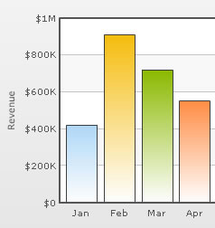
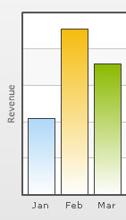
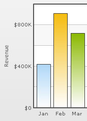
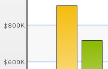
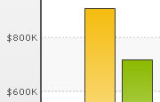
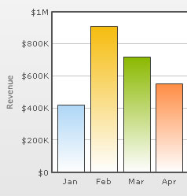
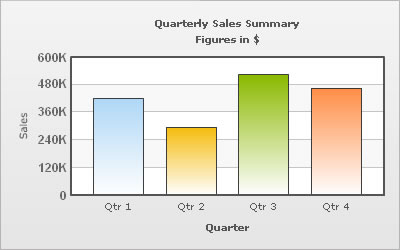
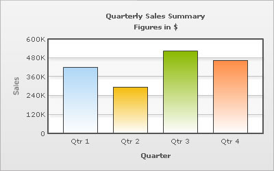

XML Attributes for Divisional Lines |
||||||||||||
Divisional lines are horizontal lines running through the canvas. They break up the y axis into smaller units helping in better visual data interpretation. |
||||||||||||
|  | ||||||||||||
| The XML code going into the above is: | ||||||||||||
| <chart caption='Monthly Revenue' xAxisName='Month' yAxisName='Revenue' numberPrefix='$' showValues='0'> <set label='Jan' value='420000' /> <set label='Feb' value='910000' /> <set label='Mar' value='720000' /> <set label='Apr' value='550000' /> .... </chart> |
||||||||||||
| Note that we haven't specified the number of div lines we want, nor the y-axis min or max value. | ||||||||||||
| Adjusting divisional lines | ||||||||||||
| In certain cases, you would want to explicitly specify the y-axis upper & lower limit values and also the number of divisional lines. In those cases, you need to disable automatic adjustment of divisional lines using adjustDiv='0'. Then you can specify the y-axis upper and lower limits using the yAxisMaxValue and yAxisMinValue attributes respectively. Also, the number of divisional lines can be specified using the numDivLines attribute. | ||||||||||||
| <chart ... adjustDiv='0' yAxisMaxvalue='100' yAxisMinValue='0' numDivLines='5'> | ||||||||||||
| Hiding y-axis values | ||||||||||||
You can hide all the y-axis values using showYAxisValues='0'. |
||||||||||||
<chart caption='Monthly Revenue' xAxisName='Month' yAxisName='Revenue' numberPrefix='$' showValues='0' showYAxisValues='0'> |
||||||||||||
| The above would yield the following result: | ||||||||||||
|  | ||||||||||||
| Skipping y-axis values | ||||||||||||
You can skip every nth y-axis value using the yAxisValuesStep attribute. |
||||||||||||
<chart caption='Monthly Revenue' xAxisName='Month' yAxisName='Revenue' numberPrefix='$' showValues='0' yAxisValuesStep='2'> |
||||||||||||
| Now the chart would look as under: | ||||||||||||
|  | ||||||||||||
| Customizing the divisional lines | ||||||||||||
The looks of the divisional lines can be customized using the following attributes:
|
||||||||||||
| <chart ... divLineColor='8CB1FF' divLineThickness='2' divLineAlpha='40'> | ||||||||||||
| This would yield the following result: | ||||||||||||
|  | ||||||||||||
| Dashed divisional lines | ||||||||||||
The divisional line can be made dashed using divLineIsDashed='1'. The dash properties - dash length and dash gap can be customized using the divLineDashLen & divLineDashGap attributes respectively. |
||||||||||||
| <chart divLineIsDashed='1' divLineDashLen='1' divLineDashGap='2' ...> | ||||||||||||
| The dashed div lines with the customized dash properties would look as shown below: | ||||||||||||
|  | ||||||||||||
| Alternate Horizontal Grid Bands | ||||||||||||
| The horizontal grid bands appear alternately between the divisional lines for all 2D charts. They can be hidden by setting showAlternateHGridColor='0'. | ||||||||||||
| <chart showAlternateHGridColor='0' ...> | ||||||||||||
| The chart without the alternate horizontal grid bands would look as under: | ||||||||||||
|  | ||||||||||||
| Customizing the horizontal grid bands | ||||||||||||
| The color and alpha of the alternate horizontal grid bands can be customized using the alternateHGridColor and alternateVGridAlpha attributes. | ||||||||||||
| Using Styles to set font properties for y-axis values | ||||||||||||
| Using Styles, you can individually set the font properties for the y-axis values. | ||||||||||||
|  | ||||||||||||
| The XML for this chart is as under. To read more on Styles, please see "For Web Developers > FusionCharts and STYLES" section. | ||||||||||||
| <chart caption='Quarterly Sales Summary' subcaption='Figures in $' xAxisName='Quarter' yAxisName='Sales' showValues='0' > <set label='Qtr 1' value='420500' /> <set label='Qtr 2' value='295400' /> <set label='Qtr 3' value='523400' /> <set label='Qtr 4' value='465400' /> <styles> <definition> <style name='myValuesFont' type='font' font='Arial' size='12' color='666666' bold='1'/> </definition> <application> <apply toObject='YAXISVALUES' styles='myValuesFont' /> </application> </styles> </chart> |
||||||||||||
| Applying effects to div lines | ||||||||||||
| We can apply effects (shadow, glow, blur, bevel) to the y-axis values and div lines using STYLES. Here, we will see a chart having shadow for the div lines. | ||||||||||||
|  | ||||||||||||
| <chart caption='Quarterly Sales Summary' subcaption='Figures in $' xAxisName='Quarter' yAxisName='Sales' showValues='0' > <set label='Qtr 1' value='420500' /> <set label='Qtr 2' value='295400' /> <set label='Qtr 3' value='523400' /> <set label='Qtr 4' value='465400' /> <styles> <definition> <style name='myShadow' type='shadow' angle='45' distance='3' color='000000'/> </definition> <application> <apply toObject='DIVLINES' styles='myShadow' /> </application> </styles> </chart> |
||||||||||||
| Similarly, the other effects can be applied to the div lines and to the y-axis values as well. | ||||||||||||
| Animating div lines & y-axis values | ||||||||||||
You can also apply animation effects to the div lines & y-axis values. In the XML given below, the x-Scale of the div lines will be animated and y-position of the y-axis values will be animated. |
||||||||||||
<chart caption='Quarterly Sales Summary' subcaption='Figures in $' xAxisName='Quarter' yAxisName='Sales' showValues='0' > |
||||||||||||
Animating alternate horizontal grid bands |
||||||||||||
| Animation effects can be applied to the alternate horizontal grid using STYLES. The following XML would animate the x-Scale and the alpha of the horizontal grid bands. | ||||||||||||
<chart caption='Quarterly Sales Summary' subcaption='Figures in $' xAxisName='Quarter' yAxisName='Sales' showValues='0' > |